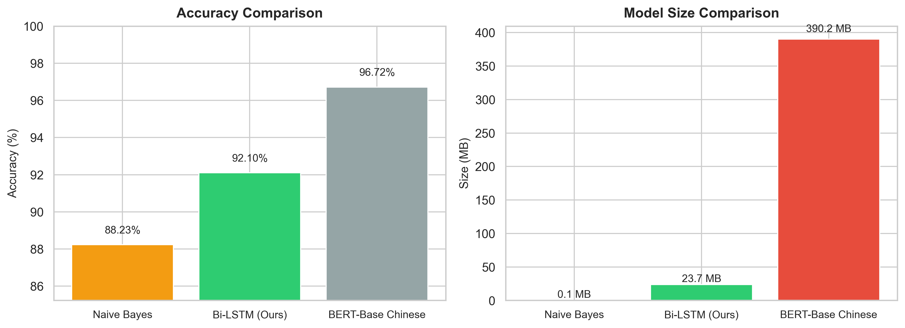
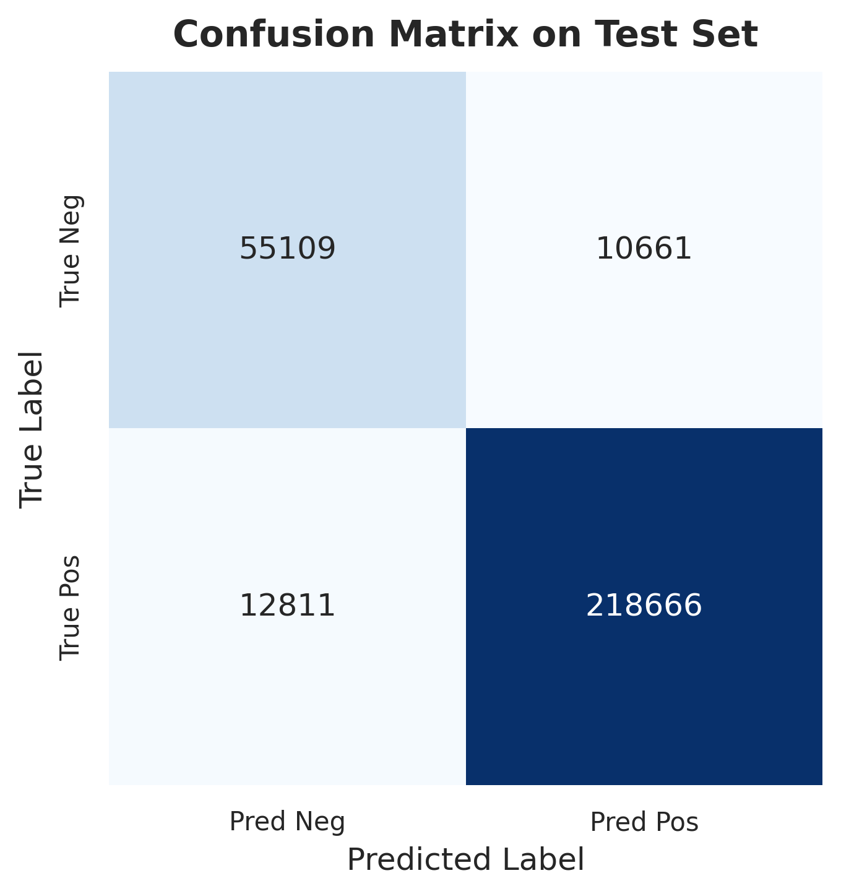
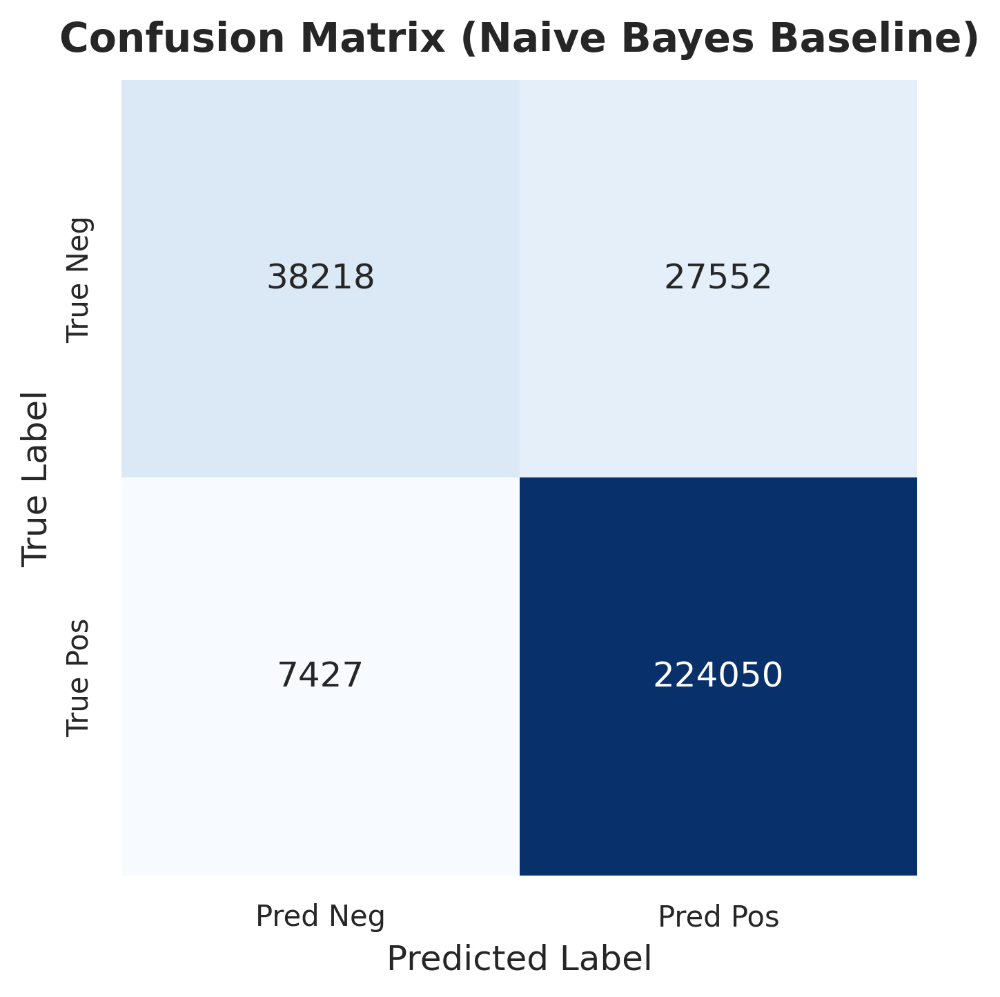
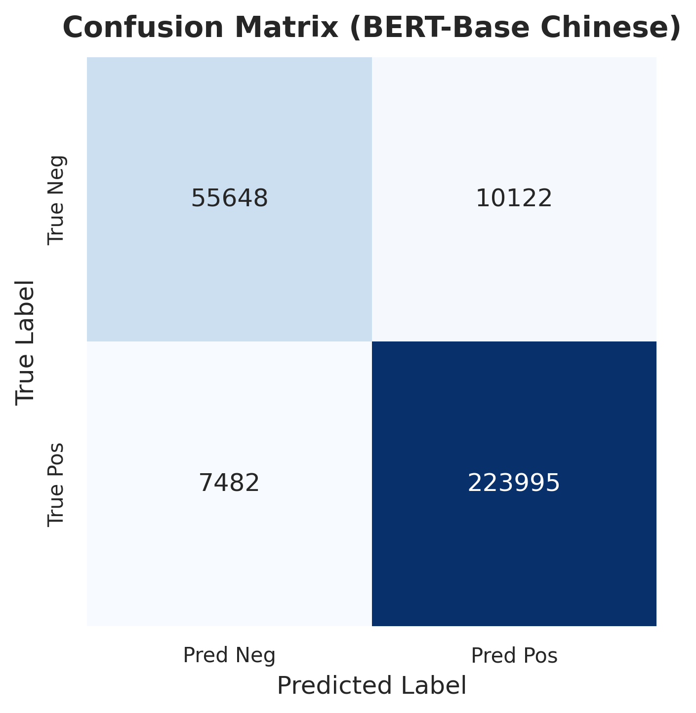
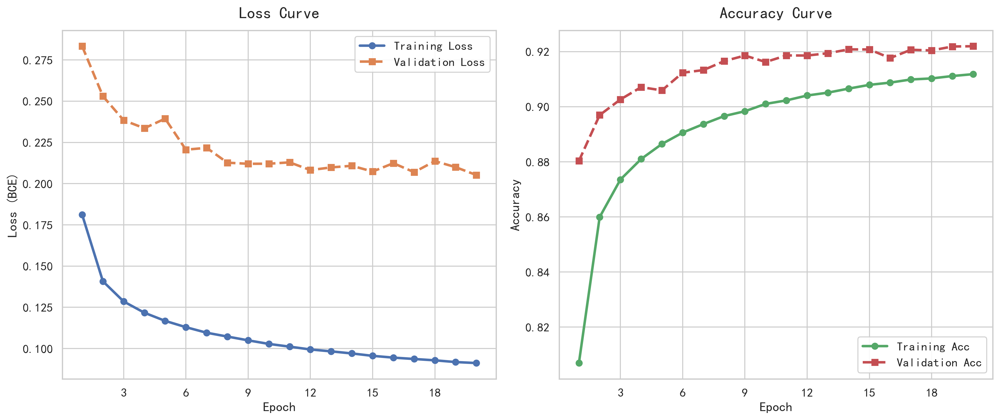
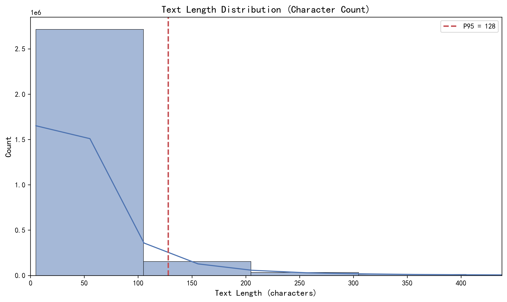
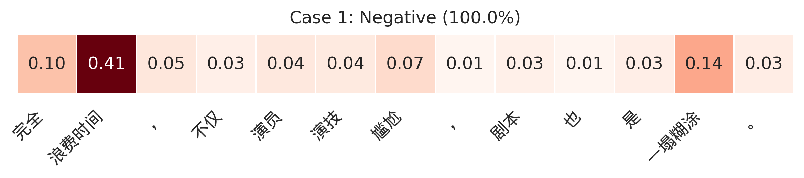
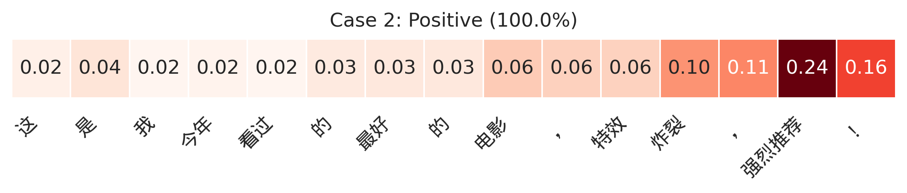
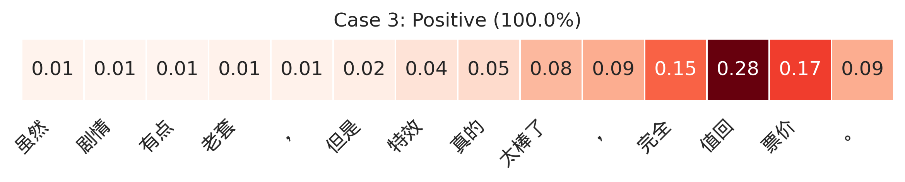

基于深度学习的情感分析系统 - 三种模型性能对比
本项目实现了一个基于深度学习的中文影评情感分析系统，对比了三种不同层次的模型方案： Naive Bayes（传统机器学习）、Bi-LSTM+Attention（轻量深度学习）和BERT（预训练语言模型）。 项目使用了148万条豆瓣影评数据，提供了完整的端到端解决方案。
148.6万条豆瓣影评数据，包含训练集、验证集和测试集。
三种模型方案的性能对比，包括准确率、F1分数和训练时间。
训练曲线、混淆矩阵和注意力热力图等可视化结果。






评论内容：完全浪费时间，不仅演员演技尴尬，剧本也是一塌糊涂。

评论内容：这是我今年看过的最好的电影，特效炸裂，强烈推荐！

评论内容：虽然剧情有点老套，但是特效真的太棒了，完全值回票价。
